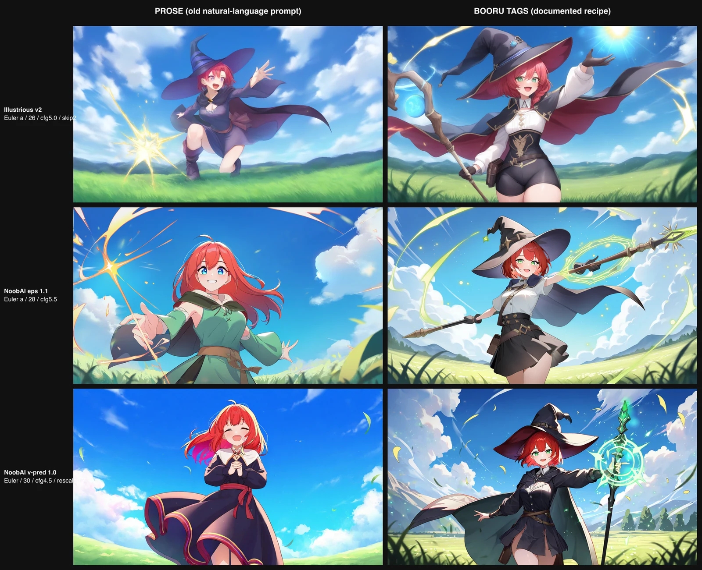
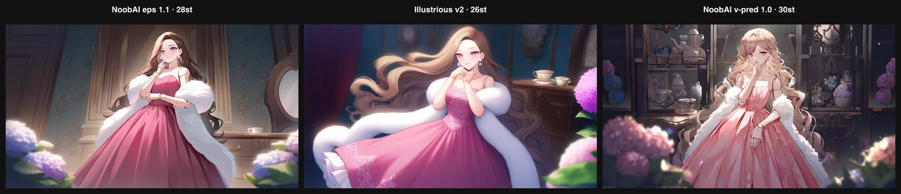

Booru, not prose: the `b` prompt bucket (and why the anime models looked bad)
Right after NoobAI landed, the anime rows looked bad — muddy, generic, nothing like the poster art these checkpoints are famous for. The reflex was to blame the step count ("run them longer") and then the model ("maybe it's just weak at our scenes"). Both were wrong. Two separate, deliberately independent research passes — one for NoobAI, one for Illustrious, each forbidden from looking at the other so neither got shoehorned into the other's recipe — landed on the same two root causes, and a third that only shows up when you stop sharing one prompt across fourteen very different models.
Root cause 1 — they're tag models, and we fed them prose
NoobAI and Illustrious are trained on the Danbooru/e621 tag space. The model authors are blunt about it: natural-language prompts "often lead to unstable or inaccurate results." Our whole scene set is lovingly-written prose ("a cheerful short red-haired sorceress in a fantasy tunic casting a bright sparkling spell…") — which is exactly right for the LLM/T5-encoder models (Qwen, Flux, Chroma) and exactly wrong for a booru CLIP model. Same seed, same scene, left = our prose, right = the same idea as comma-separated booru tags with each model's documented quality prefix:

That's not a subtle win. The prompt idiom was the single biggest lever, and no amount of extra steps would have fixed it.
Root cause 2 — the generic Lightning LoRA crystallises them
The first NoobAI post shipped eps on the shared sdxl builder + the
generic SDXL Lightning LoRA, and pinned the stippling on "v-pred is just prettier." Half right,
wrong reason. A generic SDXL-Lightning distill is trained for CFG≈0–1.5 at a matched low step
count; bolt it at strength 1.0 onto a heavily fine-tuned anime base and it collapses the sampler
into the stipple/pointillism/crystallisation we saw — the same failure ByteDance's own docs and the
community warn about. It's clean on stock SDXL/Juggernaut/RealVis and a wrecking ball on
NoobAI/Illustrious. So eps comes off Lightning too: the honest best-quality path for all three
anime checkpoints is bare, native multi-step. (There is a clean fast path — a family DMD2 4-step
LoRA at weight ~0.7, CFG ~1.5 — noted for later; the gallery wants max quality, so: native.)
The fix, in the grain of the tool — a b prompt bucket
We already had prompt-splitting: prompt_sizes s/m/l, an encoder-budget tier a model picks via
prompt_size. Booru tags aren't a budget — they're a different idiom — but they slot into the
exact same machinery as one more option. So there's now a b bucket:
- Each of the 8 scenes gains a
brendition: the same subject and the same cloth-patch motif, rewritten as tags on a varied surface (metal → scales → dress fabric → moss → bedsheet → heraldic banner → awning → ceramic glaze). - The three anime tag-models declare
prompt_size: 'b'; the other eleven keep their prose. One shared prompt can't be optimal for both idioms, and now it doesn't have to be — the resolver (per-model override > size > all) already did the routing. - The model-specific quality-tag prefix (
very awa, masterpiece, …for NoobAI;masterpiece, best quality, amazing quality, very aesthetic, newestfor Illustrious) lives in the builder as${PREFIX}{{prompt}}— the same trickponyuses for its score tags — so a scene'sbtext stays model-agnostic.
Researched separately, so the recipes diverge
The point of two independent passes: the models are not the same, and a shared recipe would have
been wrong for at least one of them. Each got its own native builder (none on the shared Lightning
sdxl path):
| sampler | steps (ceiling) | cfg | CLIP skip | prediction | |
|---|---|---|---|---|---|
| NoobAI eps 1.1 | Euler a / normal | ~28 | 5.5 | none | epsilon |
| Illustrious v2.0 | Euler a / normal | ~26 | 5.0 | 2 | epsilon |
| NoobAI v-pred 1.0 | Euler only, never Karras | ~30 | 4.5 | none | v-pred + zsnr + RescaleCFG 0.7 |
Three cells that would have been wrong under one shared recipe: Illustrious wants CLIP-skip 2 and NoobAI doesn't; v-pred forbids the Karras schedulers the others tolerate; the quality prefixes and negatives differ per author. Same booru-tag scene prompt through each model's own native builder:

The cost: the anime rows re-render
Moving off Lightning bumped these ceilings from 8 to ~26–30, so the ladder planner now climbs a long native tail for each — a few hundred fresh cells. Deprecate-don't-delete makes that safe: the old Lightning/prose masters keep serving until a validated native render is atomically swapped in, so the gallery never shows a hole while it converges. Kick it off, kill it, re-run — it resumes from disk like everything else.
The lesson worth keeping: when an output looks bad, check the prompt contract before the step count or the model. A tag model fed prose, or a fine-tune fed a mismatched distill LoRA, will look weak no matter how long you let it cook.